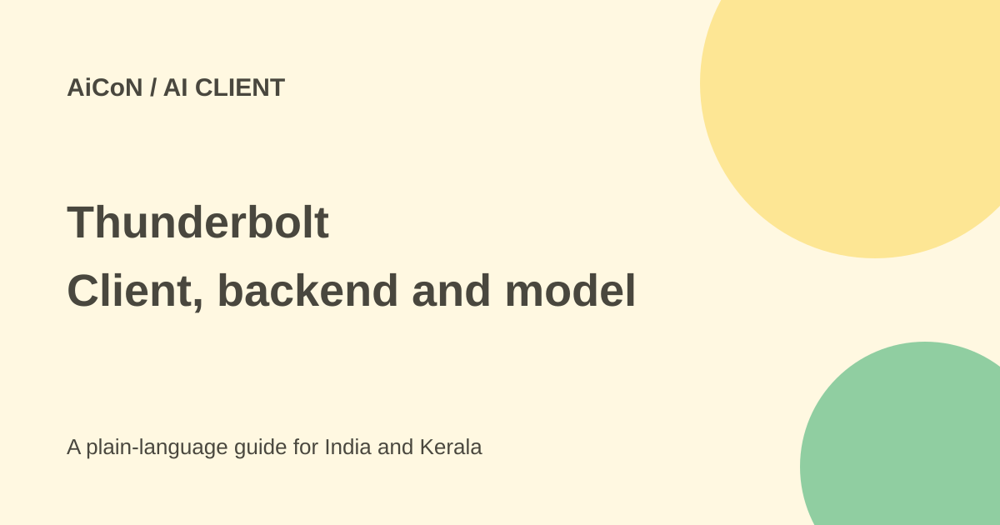

Thunderbolt AI client: self-hosting, not instant chat
Thunderbolt is an open-source AI client from Thunderbird Technologies, a Mozilla Foundation subsidiary. It is separate from the Thunderbird email app. The current README says it is early, aimed at on-premise enterprise use and still undergoing a security audit.

What is an AI client?
A client is the app you interact with. The model and backend doing the work are separate components. Thunderbolt offers chat, search and research with connected data and lets teams choose model providers.
The official site lists web, Windows, macOS, Linux, iOS and Android and compatibility with ACP agents or OpenAI-compatible model APIs. A platform list is not proof that every route is a one-click consumer app ready for your account.
It is not fully offline-first yet
The README says the current version depends on authentication and search functionality. Search can be disabled under Settings, Connections. To test locally, it says to deploy your own backend with Docker and sign up.
The current README now lists system-managed models served by the backend: Opus 5 routed to Anthropic and a Tinfoil confidential-model catalogue, with GLM 5.3 Flash as the default for a new installation. A self-hosted backend serves those only if you provide the corresponding provider keys. You can instead add your own model providers. The README suggests Ollama or llama.cpp for local inference, or API keys for compatible hosted providers. Choosing a cloud model still sends data to that provider under its terms.
How an Indian team can evaluate it
- Read the official README, licence and deployment guide, not only the marketing page.
- Choose a test machine and a non-sensitive dataset. Back up anything important.
- Have a developer review the Docker or Kubernetes deployment requirements.
- Set up the backend and authentication according to current official instructions.
- Select a local or hosted model and check its hardware, pricing and data handling.
- Keep search and integrations limited until their data routes are understood.
- Try a small research task, check citations and inspect logs and results.
- Review audit status and organisational requirements before connecting production systems.
Free software is not free infrastructure
The code is open source. The current repository licence is Mozilla Public License 2.0. Check component licences before redistributing. Models, servers, storage, electricity and technical support can cost money.
No standard INR enterprise deployment price or Indian hosting guarantee is confirmed. Self-hosting only keeps data under your control if the entire chosen setup, including model and search providers, matches that goal.
For Kerala readers
This is mainly a technical option for organisations, not an instant free chatbot. A small business should compare deployment and maintenance effort before moving internal files into it.
Do not assume the Thunderbird name makes this an email-client update. The launch explains that it has a separate enterprise AI team. The current security audit is still under way, not a completed audit certificate.
What changed since the original post?
We checked the README's authentication, search and backend caveats. Its new managed-model catalogue replaces the older no-public-endpoint description; that still does not establish a free hosted allowance. They qualify the idea of free local use: you still need a working technical deployment and a model. No backend was installed and no audit result was independently verified.
Frequently asked questions
Is it Thunderbird email?
No. It is a separate enterprise AI product.
Are managed models automatically free on my server?
No free allowance is established. The README requires provider keys for those models on a self-hosted backend.
Is it fully offline already?
No. The current README describes remaining authentication and search dependencies.
Sources: Official Thunderbolt site · Current README · Official announcement · Repository licence. Checked 7 October 2026.